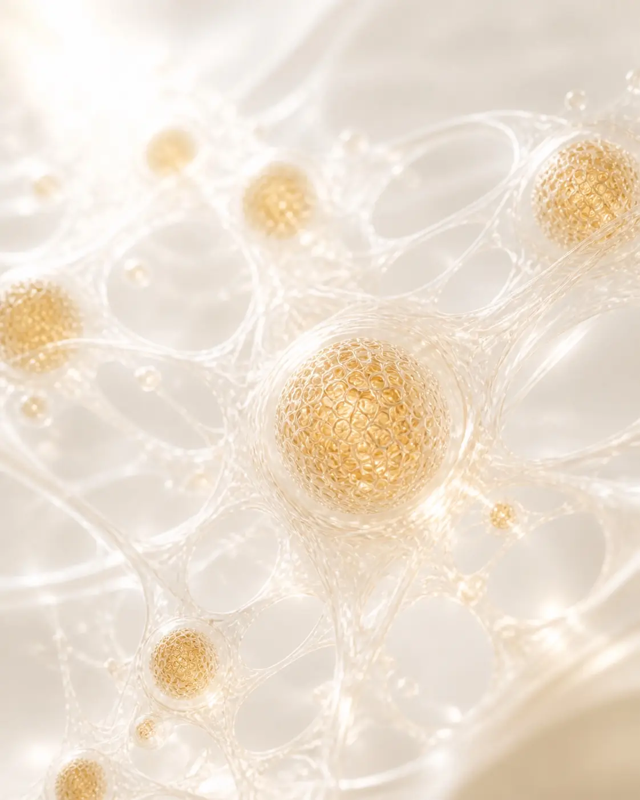
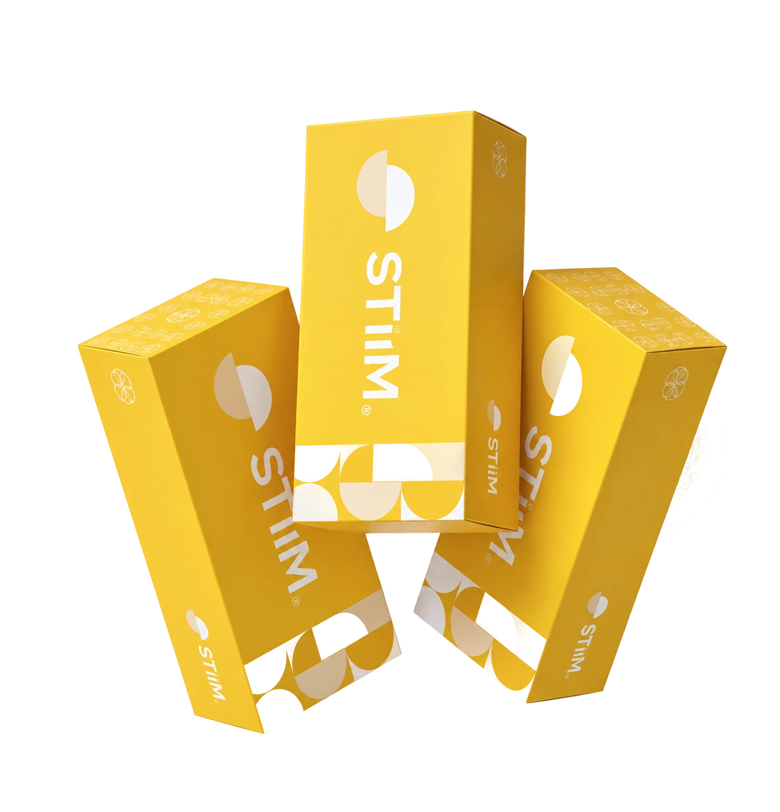
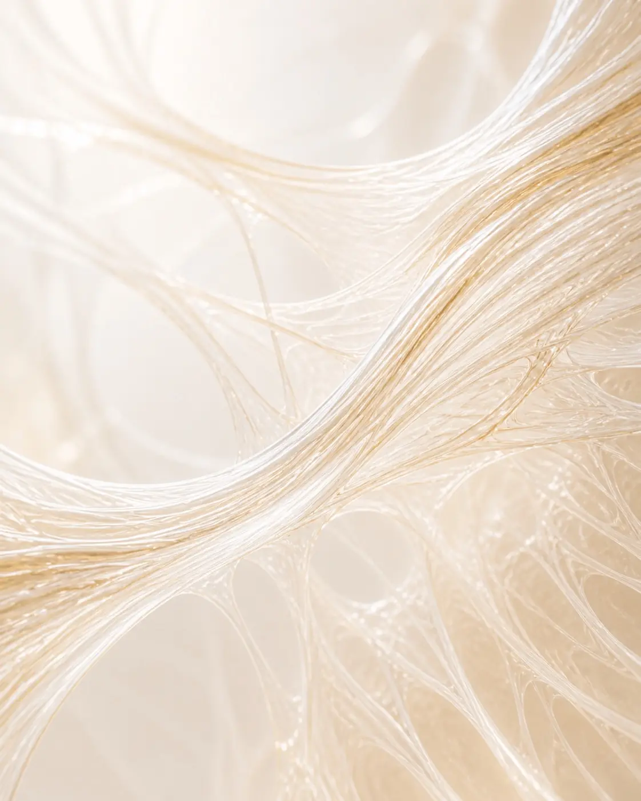
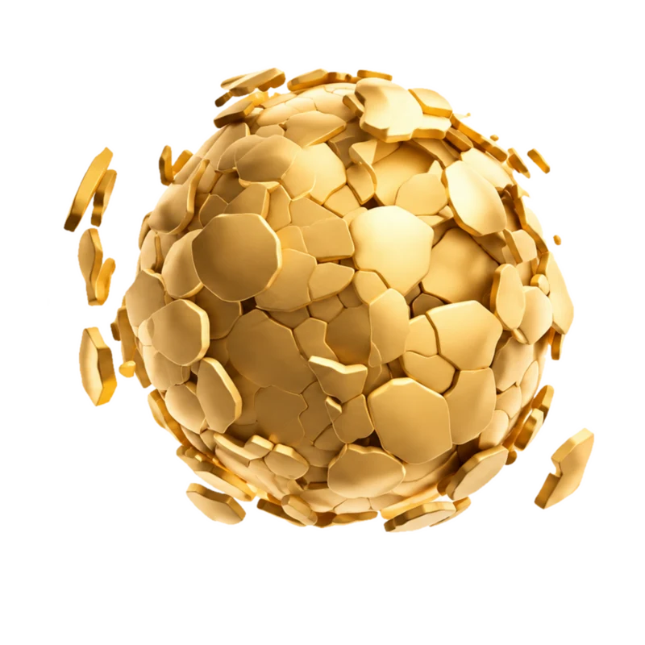
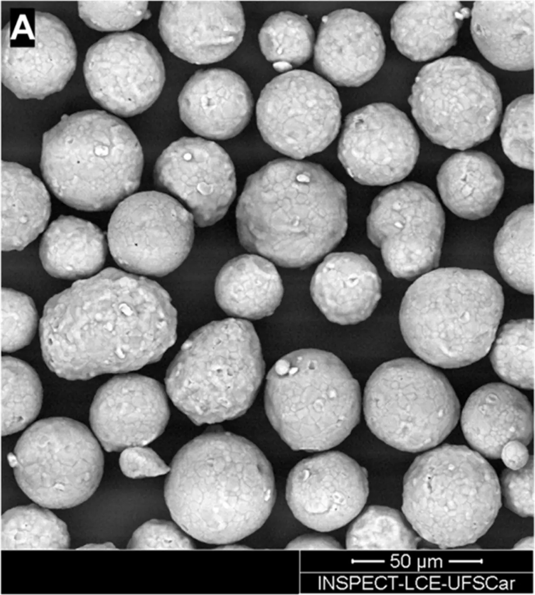
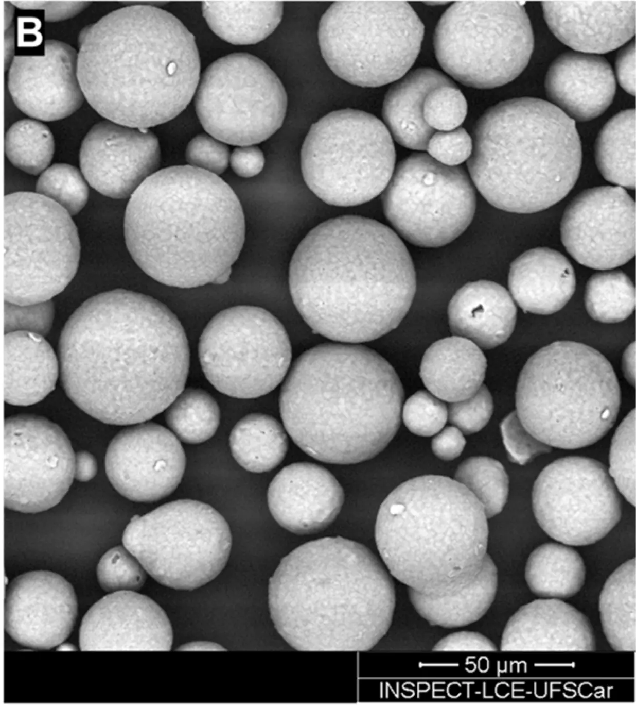
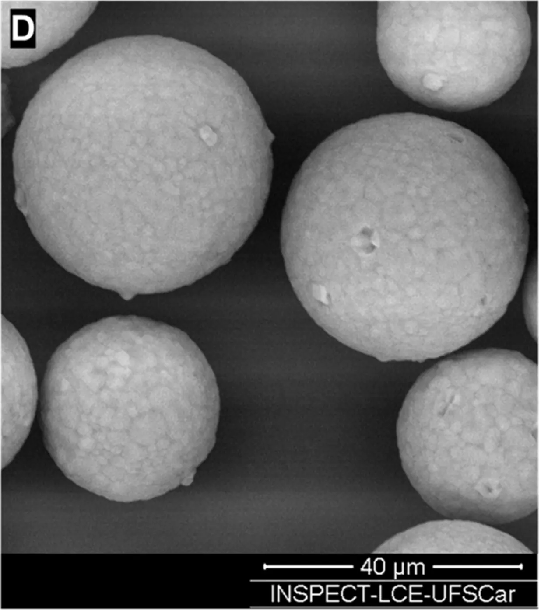
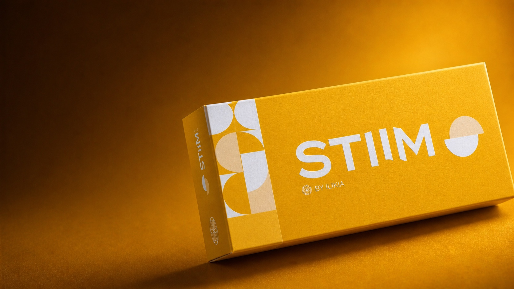

Ciência celular
Bioestimulação
Estímulo à produção de colágeno.
Renovação
Favorece a renovação e a qualidade da pele.
Regeneração
Restauração da matriz extracelular.

Bioestimulação · Regeneração · Longevidade
A Hidroxiapatita de Cálcio da ILIKIA desenvolvida para bioestimulação de colágeno, regeneração tecidual e melhora global da qualidade da pele.1
O que é STIIM
STIIM atua na estrutura dérmica, na função celular e na qualidade da pele. Sua resposta inflamatória controlada e biocompatível promove regeneração tecidual e remodelamento progressivo.

Ciência celular
Estímulo à produção de colágeno.
Favorece a renovação e a qualidade da pele.
Restauração da matriz extracelular.

Estrutura da pele
Evolução progressiva da estrutura dérmica.
Ativação celular e longevidade cutânea.
Espessamento dérmico e sustentação.
Bioestímulo rápido
Não é só o depois.
É já nas primeiras semanas.
Em até 4 semanas, o estímulo de fibroblastos já se traduz em aspecto viçoso e no início da produção de colágeno tipo I. O mecanismo completo, do efeito imediato à longevidade, está logo abaixo.

Tecnologia Lattice-Pore®
A arquitetura tridimensional de STIIM favorece uma degradação lenta e uniforme, com melhor dispersão no tecido e estímulo sustentado.
Morfologia da superfície
Microscopia eletrônica de varredura (MEV). Barra de escala: 50 µm.


Imagens: Dal Col V, Matte BF. Calcium hydroxyapatite biostimulators: a comparative study of biological response and particle morphology. Biomedicines. 2026;14(7):1447. DOI: 10.3390/biomedicines14071447.
Tecnologia de 3ª geração
Distribuição e degradação são etapas conectadas. Selecione uma curva para entender como a morfologia de cada produto influencia sua resposta no tecido.
Comparar curvas
STIIM25–45 µm · distribuição uniforme
Produto RDistribuição mais ampla e irregular
Mecanismo de ação
Uma resposta progressiva que acompanha o tempo biológico da pele.
Até 4 semanas
Aspecto viçoso e início do estímulo de fibroblastos e produção de colágeno.
Médio e longo prazo · até 24 meses
Bioestimulação, reposicionamento dos tecidos e melhora da qualidade da pele.
Resposta contínua
Regeneração profunda e modulação de marcadores associados à juventude biológica.1
Evidências científicas
Produção equilibrada de colágeno tipo I e III, associada à restauração da matriz extracelular e à longevidade cutânea, sem caracterizar fibrose exacerbada.
Resposta inicial
Picos de produção
Evolução clínica e estrutural
Percepção e manutenção dos resultados
Uma evolução que acompanha o tempo biológico da pele.
Receber as evidências completasAplicação e versatilidade
Para pacientes jovens ou peles maduras, STIIM permite abordagens personalizadas de prevenção, correção e manutenção, reunindo estruturação, bioestimulação, textura e longevidade em diferentes planos anatômicos. Quando indicado, também pode compor protocolos combinados com ácido hialurônico, fios e tecnologias.
Personalização do tratamento
De pacientes jovens a peles maduras, STIIM acompanha estratégias de prevenção, restauração e manutenção com diluições personalizadas para cada objetivo, sem abrir mão da qualidade da pele.
Prevenção · Restauração · Manutenção
Para objetivos que combinam efeito de estruturação e bioestímulo.
Para objetivos direcionados ao bioestímulo, em uma abordagem mais leve.
Imagens: Dal Col V, Matte BF. Calcium hydroxyapatite biostimulators: a comparative study of biological response and particle morphology. Biomedicines. 2026;14(7):1447. DOI: 10.3390/biomedicines14071447.

A escolha para quem busca
“STIIM atua na estrutura da pele, promovendo qualidade, firmeza e longevidade cutânea.”
Mais do que tratar sinais do envelhecimento, STIIM atua nos marcadores biológicos da pele para entregar resultados progressivos, naturais e duradouros.
Falar com a ILIKIAAcesso profissional
Receba o material técnico-científico, as evidências clínicas, o protocolo de aplicação, condições comerciais e o contato da equipe ILIKIA.
Nossa equipe entrará em contato pelo canal informado.